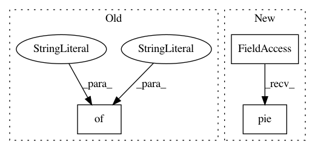

f04c2384c98e80b37ac442f5e0fb6152d4ee059e,trixi/logger/visdom/numpyvisdomlogger.py,NumpyVisdomLogger,show_progress,#NumpyVisdomLogger#Any#Any#Any#Any#Any#,338
Before Change
if opts is None:
opts = {}
vis_task = {
"type": "progress",
"num": num,
"total": total,
"name": name,
"env_appendix": env_appendix,
"opts": opts
}
self._queue.put_nowait(vis_task)
def __show_progress(self, num, total=None, name=None, env_appendix="", opts=None, **kwargs):
After Change
title="Progress")
)
win = self.vis.pie(
X=x,
win=name,
env=self.name + env_appendix,
opts=opts
)
return win
@convert_params
In pattern: SUPERPATTERN
Frequency: 3
Non-data size: 3
Instances
Project Name: MIC-DKFZ/trixi
Commit Name: f04c2384c98e80b37ac442f5e0fb6152d4ee059e
Time: 2019-03-01
Author: t.adler@dkfz-heidelberg.de
File Name: trixi/logger/visdom/numpyvisdomlogger.py
Class Name: NumpyVisdomLogger
Method Name: show_progress
Project Name: matplotlib/matplotlib
Commit Name: 3bbdabceb5880c9eb6b448fc4d3aa9fdd8fa83c1
Time: 2018-04-23
Author: dstansby@gmail.com
File Name: examples/pie_and_polar_charts/pie_demo2.py
Class Name:
Method Name:
Project Name: MIC-DKFZ/trixi
Commit Name: f04c2384c98e80b37ac442f5e0fb6152d4ee059e
Time: 2019-03-01
Author: t.adler@dkfz-heidelberg.de
File Name: trixi/logger/visdom/numpyvisdomlogger.py
Class Name: NumpyVisdomLogger
Method Name: show_piechart